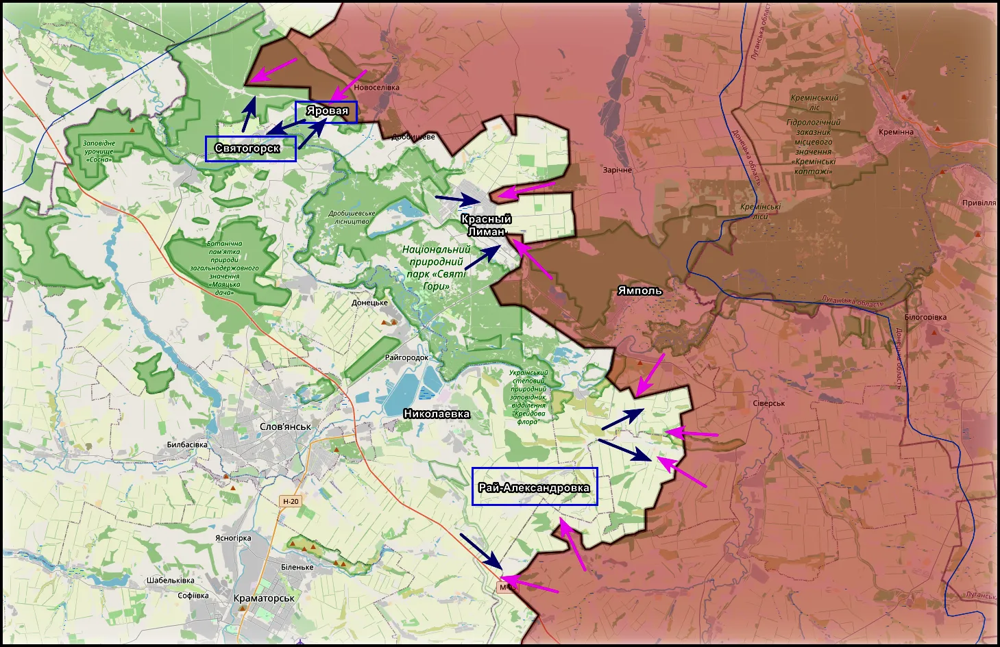
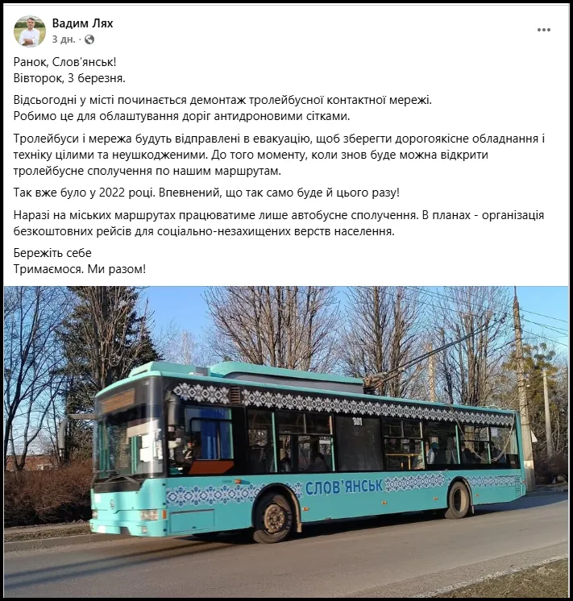

Красный Лиман - Славянск: давление на логистику и оборону
Дата:
Давление на переправы
На Краснолиманском и Славянском направлениях развивается единая цепочка давления, в которой основная борьба идет не за "красивую линию на карте", а за логистику и устойчивость всей украинской обороны на участке. Удары наносятся по переправам, дорогам и промежуточным населенным пунктам, параллельно усиливается авиационное и беспилотное воздействие. Таким образом формируется не локальное давление на отдельные позиции, а последовательное ухудшение условий для маневра, снабжения и ротации противника.
Последовательные удары по переправам в районах Оскола, Гороховатки, Богородичного и Студенка указывают на системный характер действий. Задача просматривается достаточно ясно - нарушить маршруты, связывающие тыловые районы с передовыми позициями. Логика здесь прямая: чем хуже работает мостовая и переправочная сеть, тем сложнее противнику перебрасывать резервы, проводить ротации, подвозить боекомплект и удерживать прежний темп на линии фронта.

Участок Красного Лимана
В районе Красного Лимана как российские, так и украинские источники подтверждают продвижение в направлении Яровой. При этом сама Яровая, вероятно, пока остается либо серой зоной, либо участком неустойчивого контроля, а лесной массив за ней, по всей видимости, все еще частично удерживается противником. На восточном и юго-восточном участке у самого Лимана заметных изменений пока не фиксируется. Отдельно поступают сообщения о сохраняющейся нестабильности в районе Ямполя, где противник пытается контратаковать.
По самому Лиману продолжаются авиационные и артиллерийские удары. Если ранее можно было предполагать отход противника на рубеж Татьяновка - Пришиб, то текущая картина указывает на другое: данный участок уже насыщается силами и фактически рассматривается как одна из действующих опорных полос обороны.

Ситуация вокруг Славянска
Дополнительным косвенным признаком ухудшения положения для противника выглядит ситуация в Славянске. Сообщения о демонтаже троллейбусных линий и вывозе части автопарка в тыл указывают на адаптацию городской инфраструктуры к возможному дальнейшему ухудшению оперативной обстановки.
На подступах к Славянску продолжаются бои в районах Приволья, Липового, Федоровки Второй, а также развивается давление в сторону Кривой Луки и в районе Калеников. Одновременно на западных окраинах и на северных высотах Резниковки противник все еще удерживает часть позиций. Дополнительным сдерживающим фактором на южном фасе остается водоканал на направлениях Тихоновки и Малиновки, который сохраняет значение серьезного естественного рубежа.
В целом текущая конфигурация указывает не на быстрый прорыв, а на последовательное формирование условий для дальнейшего изменения оперативной обстановки. Давление строится через удары по логистике, борьбу за серые зоны и постепенное поджатие противника на участке от Красного Лимана до Славянска. Таким образом речь идет скорее о подготовке условий для будущих решений на направлении, чем о попытке быстрого тактического прорыва.